Giải pháp hệ thống
8. Quy trình chuyển kho
Chuyển hàng giữa các kho (theo yêu cầu, phiếu chuyển kho, phê duyệt và đồng bộ SAP) và chuyển vị trí trong cùng một kho.
8.1Yêu cầu chuyển kho
Giao dịch kho › Chuyển kho
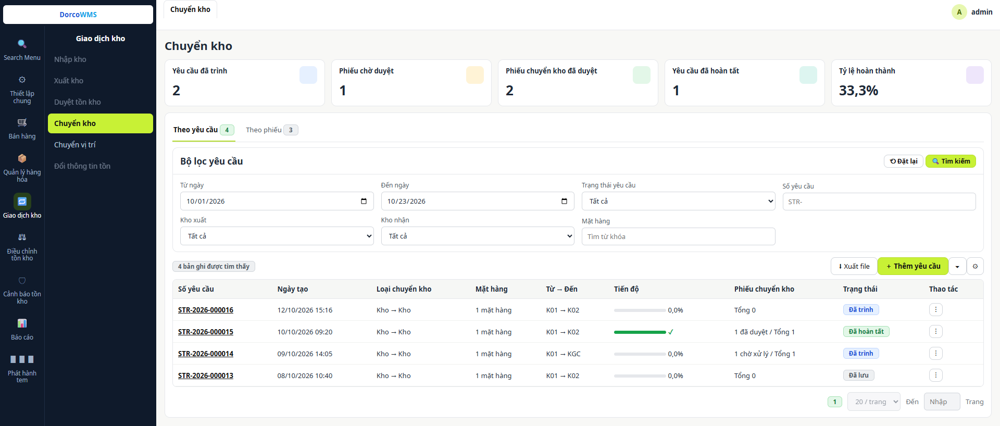
1 2 3 4 5 6 7 8- 1Thẻ tổng hợp: số yêu cầu đang chờ chuyển, phiếu chờ duyệt, phiếu đã duyệt, yêu cầu đã hoàn tất và tỷ lệ hoàn thành.
- 2Tab Theo yêu cầu / Theo phiếu: cùng một màn hình. Tab Theo phiếu là danh sách phiếu chuyển kho (ảnh tiếp theo).
- 3Bộ lọc yêu cầu: từ ngày, đến ngày, trạng thái, số yêu cầu, kho xuất, kho nhận, mặt hàng.
- 4Xuất file và + Thêm yêu cầu: xuất danh sách ra Excel; tạo yêu cầu chuyển kho trên WMS. Hai nút cuối để lọc theo cột và chọn cột hiển thị.
- 5Từ → Đến: kho xuất và kho nhận của yêu cầu.
- 6Tiến độ: thanh tiến độ số lượng đã chuyển so với số lượng yêu cầu.
- 7Phiếu chuyển kho: số phiếu đã duyệt và chờ xử lý trên tổng số phiếu lập từ yêu cầu (một yêu cầu có thể chuyển nhiều lần).
- 8Thao tác (⋮): Chi tiết, Sửa, Xóa, Gửi yêu cầu, In QR, Tạo phiếu chuyển kho, Duyệt tất cả… Nút hiện tùy theo tình trạng của yêu cầu.
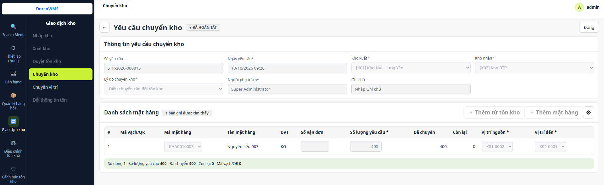
9 10 11 12 13 14- 9Tiêu đề và trạng thái: trạng thái hiện cạnh tiêu đề (Đã lưu, Đã trình, Đã hoàn tất); nút ← quay về danh sách.
- 10Nút thao tác: yêu cầu đã trình hoặc đã hoàn tất chỉ xem, có nút Đóng; yêu cầu đã lưu có Lưu và Gửi yêu cầu.
- 11Thông tin yêu cầu: Số yêu cầu (WMS sinh), Ngày yêu cầu, Kho xuất, Kho nhận, Lý do chuyển kho, Người phụ trách, Ghi chú. Kho xuất, kho nhận khóa khi yêu cầu đã có dòng.
- 12Thêm dòng: Thêm từ tồn kho, Thêm mặt hàng; nút ⚙ chọn cột hiển thị. Mờ khi yêu cầu chỉ xem.
- 13Danh sách mặt hàng: Mã vạch/QR, mã và tên mặt hàng, ĐVT, Số vận đơn, SL yêu cầu, Đã chuyển, Còn lại, Vị trí nguồn, Vị trí đến.
- 14Dòng tổng: Số dòng, SL yêu cầu, Đã chuyển, Còn lại, Mã vạch/QR.
8.2Quét tem chuyển kho
Ứng dụng PDA › Giao dịch kho › Chuyển kho
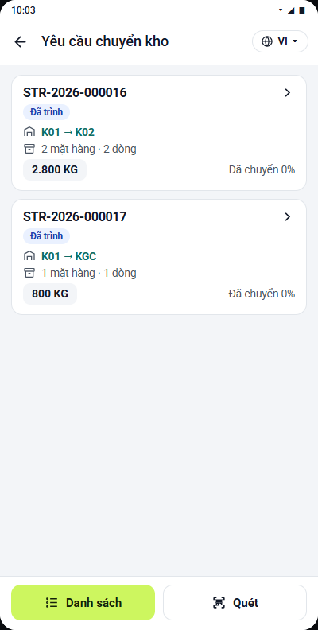
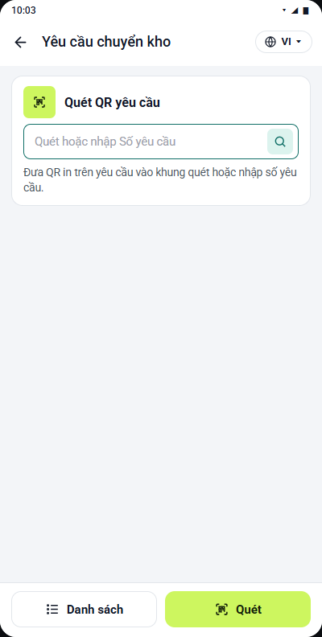
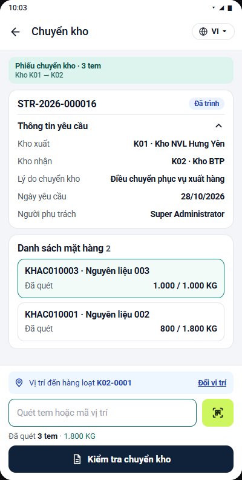
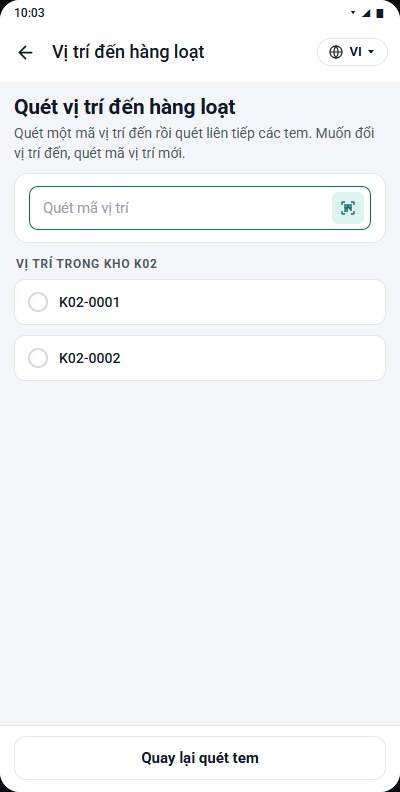
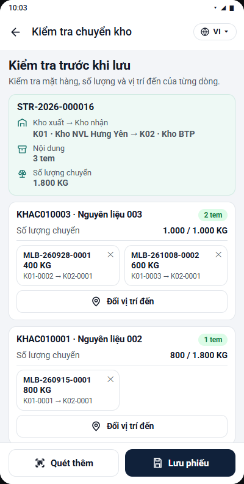
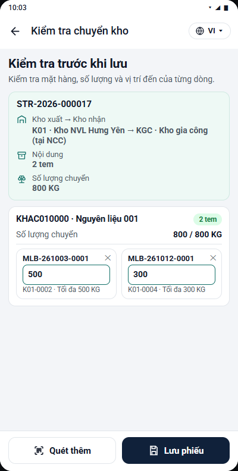
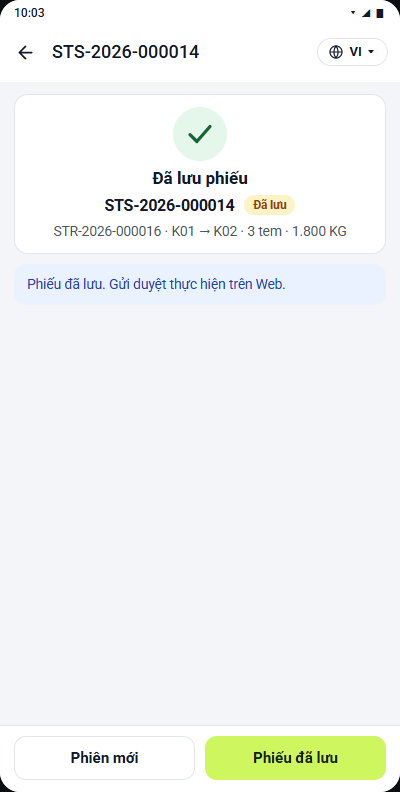
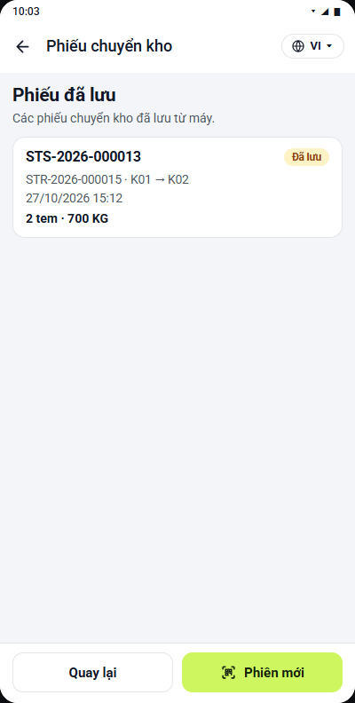
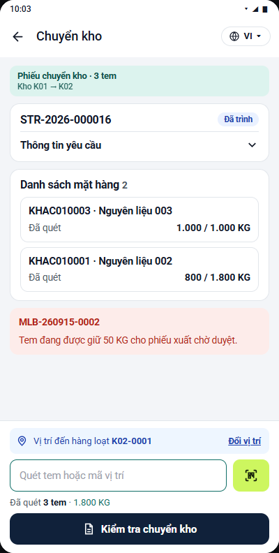
8.3Phiếu chuyển kho
Giao dịch kho › Chuyển kho › Phiếu chuyển kho
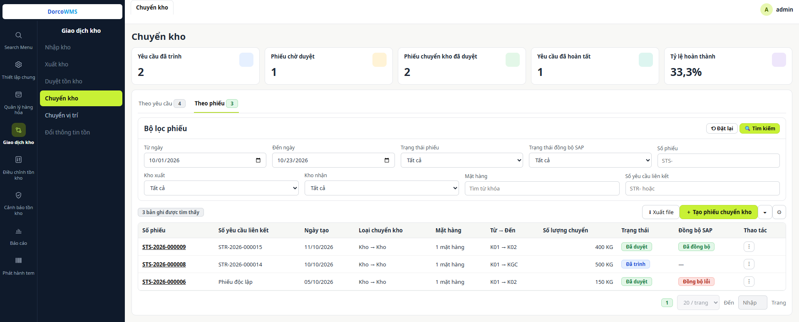
1 2 3 4 5- 1Bộ lọc phiếu: thêm lọc Trạng thái đồng bộ SAP và Số yêu cầu liên kết (gõ “độc lập” để lọc phiếu không theo yêu cầu).
- 2+ Tạo phiếu chuyển kho: lập phiếu độc lập, không theo yêu cầu.
- 3Số yêu cầu liên kết: yêu cầu mà phiếu được tạo từ đó, hoặc “Phiếu độc lập”.
- 4Đồng bộ SAP: trạng thái đồng bộ của từng phiếu; phiếu chưa duyệt để trống (—).
- 5Thao tác (⋮): Chi tiết, Sửa, Xóa, Gửi duyệt, Phê duyệt, Hủy duyệt, Đồng bộ lại SAP… Nút hiện tùy theo tình trạng của phiếu.
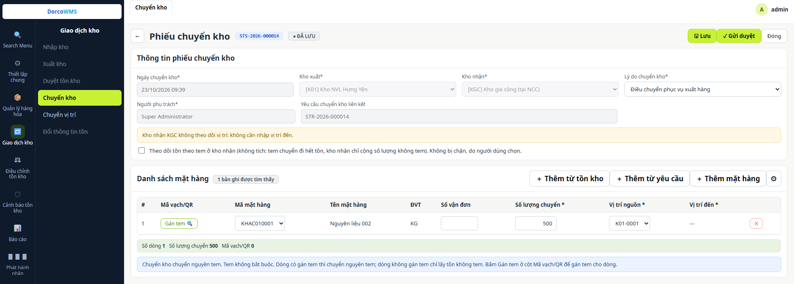
6 7 8 9 10 11- 6Số phiếu: số do WMS sinh khi lưu, hiện trên tiêu đề. Phiếu đã gửi SAP có thêm nhãn trạng thái đồng bộ cạnh số phiếu.
- 7Nút thao tác: Lưu, Gửi duyệt, Phê duyệt, Hủy duyệt, Đồng bộ lại SAP… tùy tình trạng của phiếu; Đóng để quay về danh sách.
- 8Thông tin phiếu: Ngày chuyển kho, Kho xuất, Kho nhận, Lý do chuyển kho, Người phụ trách, Yêu cầu chuyển kho liên kết. Kho nhận không quản lý vị trí (ví dụ kho gia công) thì hiện thêm ô chọn “Theo dõi tồn theo tem ở kho nhận”.
- 9Thêm dòng: Thêm từ tồn kho, Thêm từ yêu cầu, Thêm mặt hàng; nút ⚙ chọn cột hiển thị.
- 10Mã vạch/QR: nút Gán tem mở danh sách tem của kho xuất để gán cho dòng; mã tem đã gán hiện cạnh nút.
- 11Vị trí nguồn / Vị trí đến: kho nhận không quản lý vị trí thì cột Vị trí đến để trống (—).
8.4Chuyển vị trí
Giao dịch kho › Chuyển vị trí
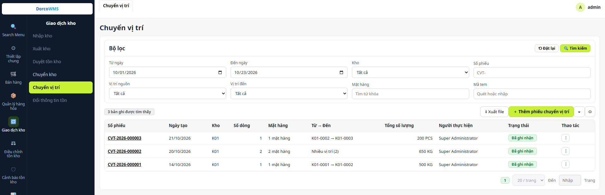
1 2 3 4 5- 1Bộ lọc: từ ngày, đến ngày, kho, số phiếu, vị trí nguồn, vị trí đến, mặt hàng, mã tem.
- 2Xuất file và + Thêm phiếu chuyển vị trí: xuất danh sách ra Excel; lập phiếu trên Web. Hai nút cuối để lọc theo cột và chọn cột hiển thị.
- 3Từ → Đến: tuyến vị trí của phiếu; phiếu có nhiều tuyến hiện “Nhiều vị trí (N)”.
- 4Tổng số lượng: tổng số lượng chuyển kèm đơn vị; phiếu có nhiều đơn vị tính hiện “Nhiều ĐVT”.
- 5Thao tác (⋮): Chi tiết, Sửa, Xóa.
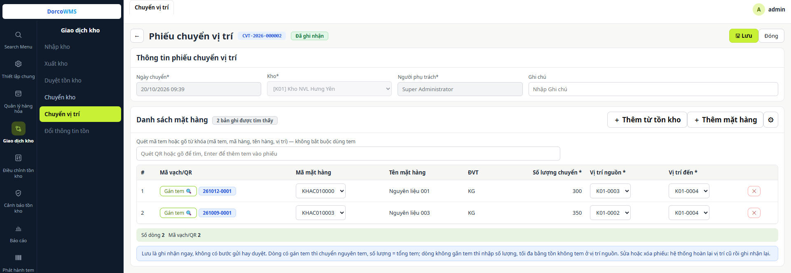
6 7 8 9 10 11- 6Số phiếu: số do WMS sinh khi lưu, hiện trên tiêu đề.
- 7Nút thao tác: Lưu và Đóng. Khi mở xem phiếu có Sửa và Xóa.
- 8Thông tin phiếu: Ngày chuyển, Kho, Người phụ trách, Ghi chú. Kho khóa khi phiếu đã có dòng.
- 9Ô quét mã tem: quét QR hoặc gõ từ khóa (mã tem, mã hàng, tên hàng, vị trí), Enter để thêm tem vào phiếu. Không bắt buộc dùng tem; có thể Thêm từ tồn kho hoặc Thêm mặt hàng.
- 10Mã vạch/QR: nút Gán tem chọn tem cho dòng; mã tem đã gán hiện cạnh nút.
- 11Vị trí nguồn / Vị trí đến: mỗi dòng có tuyến riêng; vị trí đến phải khác vị trí nguồn.
8.5Chuyển vị trí trên PDA
Ứng dụng PDA › Giao dịch kho › Chuyển vị trí
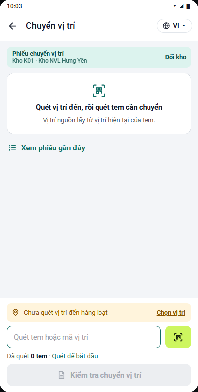
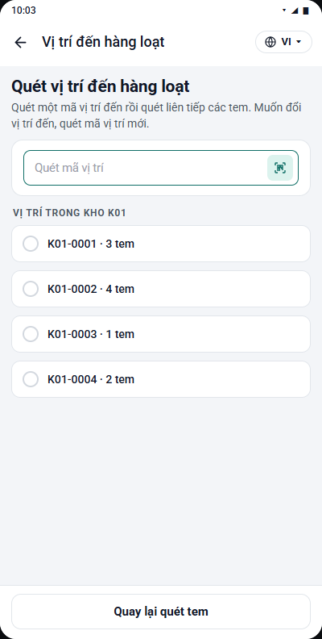
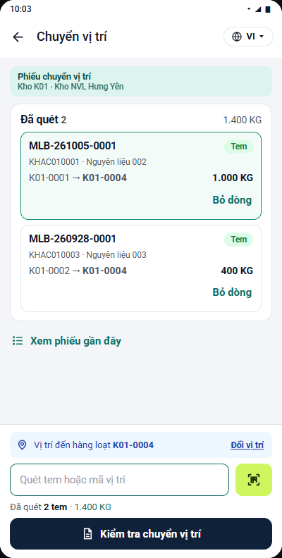
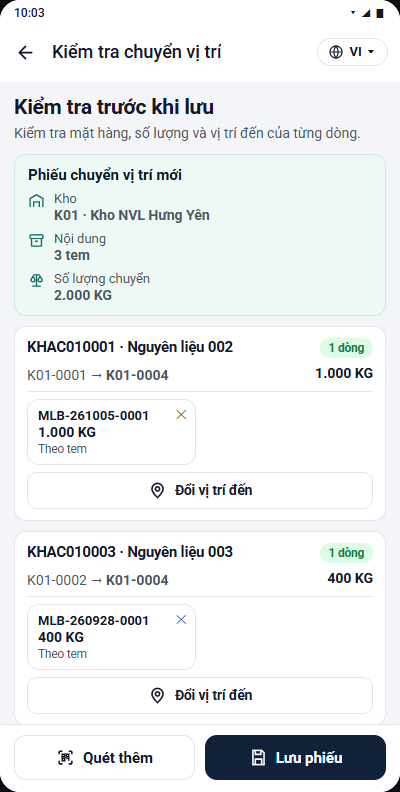
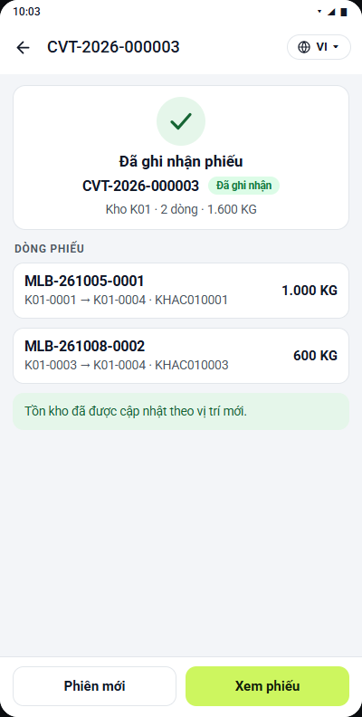
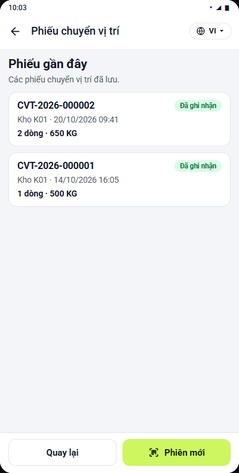
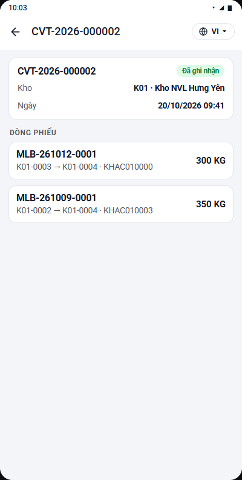
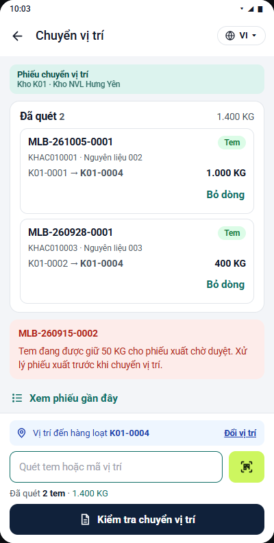